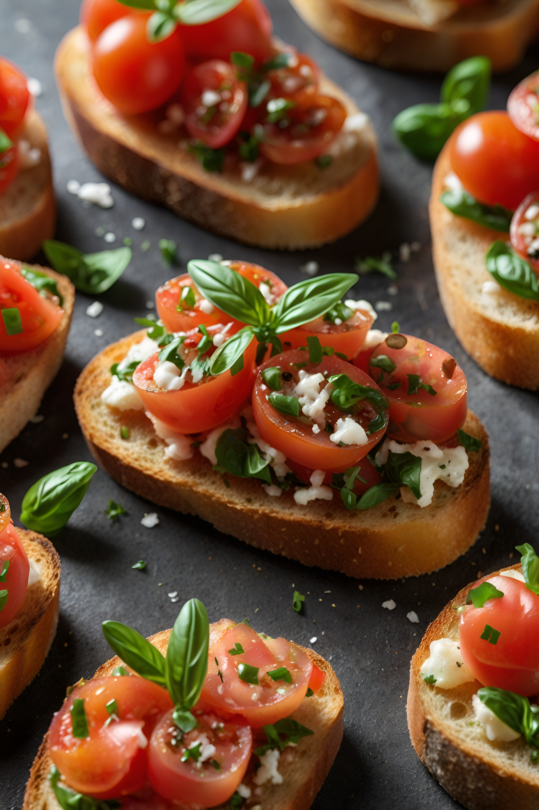

Classic Bruschetta
Traditional Italian appetizer featuring fresh tomatoes, basil, and garlic on perfectly toasted bread. Simple yet incredibly flavorful!

Ingredients
For the Topping:
- 6 ripe Roma tomatoes, diced
- 3 cloves garlic, minced
- 1/4 cup fresh basil leaves, chopped
- 2 tablespoons extra virgin olive oil
- 1 tablespoon balsamic vinegar
- 1/2 teaspoon salt
- 1/4 teaspoon black pepper
For the Bread:
- 1 baguette or Italian bread, sliced diagonally
- 1/4 cup extra virgin olive oil
- 2 whole garlic cloves, peeled
- Salt to taste
Instructions
-
Prepare the Topping
In a medium bowl, combine diced tomatoes, minced garlic, chopped basil, olive oil, and balsamic vinegar. Season with salt and pepper. Let sit at room temperature for at least 15 minutes to allow flavors to meld.
-
Toast the Bread
Preheat your broiler. Brush bread slices with olive oil on both sides. Place on a baking sheet and broil for 1-2 minutes per side until golden brown.
-
Season the Bread
While bread is still hot, rub each slice with a whole garlic clove. The rough surface of the toasted bread will help release the garlic's flavor.
-
Assemble and Serve
Top each bread slice with the tomato mixture. Serve immediately while bread is still warm.
Chef's Tips
- Use ripe but firm tomatoes to prevent the topping from becoming too watery.
- Remove tomato seeds before dicing to keep the topping from getting soggy.
- For the best flavor, prepare the tomato mixture in advance but toast the bread just before serving.
- Choose a good quality baguette or Italian bread that can hold up to the topping.